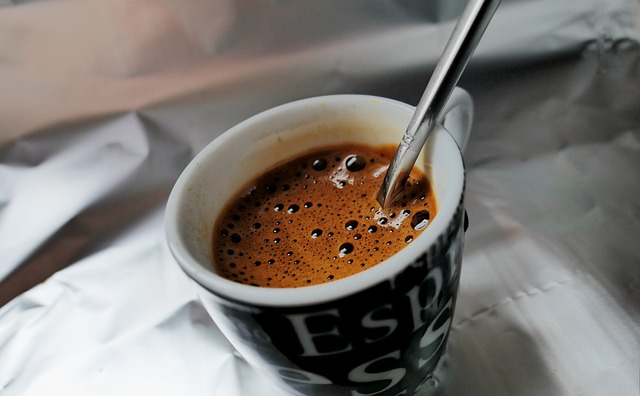
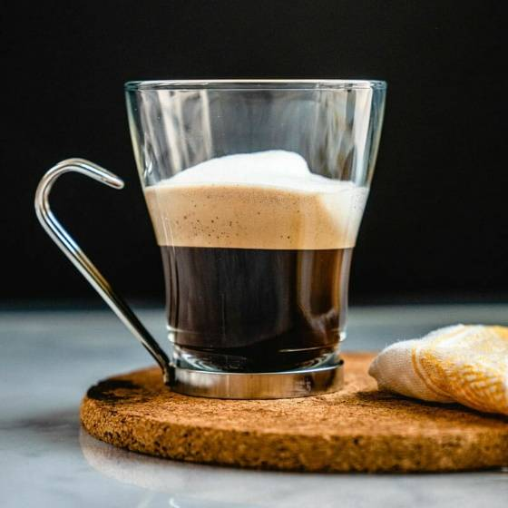
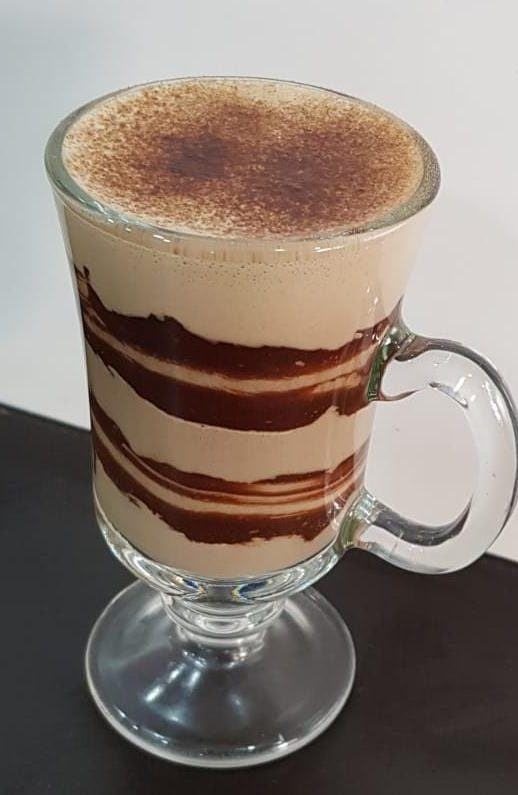
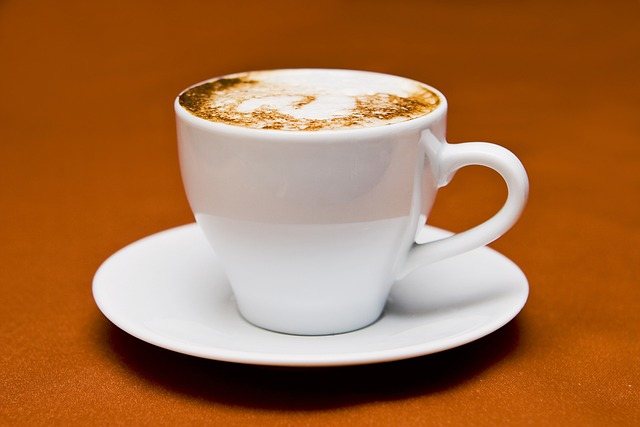
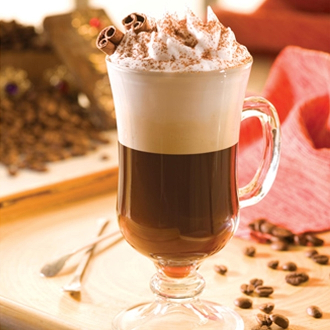

Convidamos você para um Tour
Vamos mostrar e explicar para você a variedades do nossos cafés, origem e como são preparados.

O espresso, receita tradicional, é o café puro e feito sob pressão, sem adição de leite ou qualquer outro ingrediente. Quando bem feito, ele apresenta duas camadas: a bebida e seu creme (espuma).

O caffè latte também tem origem italiana e nada mais é do que o café com leite, também conhecido como pingado em algumas regiões do Brasil.

O macchiato é uma versão adocicada do espresso com uma “macchia di latte” (mancha de leite) vaporizada, que traz cremosidade e valoriza os açúcares da bebida.

O mocha ou mocaccino é para os fãs de chocolate, já que é feito com café espresso, leite vaporizado, espuma de leite e calda de chocolate.

O cappuccino é uma deliciosa invenção italiana, que mistura o café espresso com leite vaporizado, resultando em um creme bem consistente.
